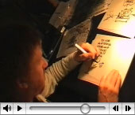

Rob en de rebellen presenteren in samenwerking met de Waag Society:
Het einde van Nederland in twaalf stappen
------------------------------
Stap 4: Geheugen
Nog niet bekend wanneer. Hou deze pagina in de gaten.
|UPDEET - 24 okt. 2006| Wat wel bekend is dat het niet in de Waag zal plaats vinden.
------------------------------
Stap 3: Taal
Woensdag 31 mei 20:00uur, De Waag Amsterdam, Toegang G R A T I S

------------------------------
Stap 2: Veiligheid
Woensdagavond 22 maart 20:00uur, De Waag Amsterdam, Toegang G R A T I S
------------------------------
Stap1: Geld
Woensdagavond 22 februari 20:00uur, De Waag Amsterdam, Toegang G R A T I S
------------------------------
-> Rob en de Rebellen
-> Ga naar Het einde van Nederland in twaalf stappen site
-> Ga naar de Waag
-> Zie stream
-> Bekijk de cartoons
 <- SproetS cartooneert in de Waag
Eindelijk zijn de SproetS life-live cartoons, gemaakt tijdens de bijeenkomsten/uitzendingen in de Waag, op het net! Klik hier!